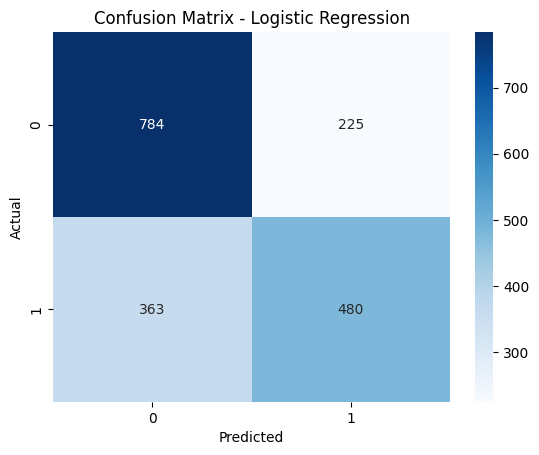
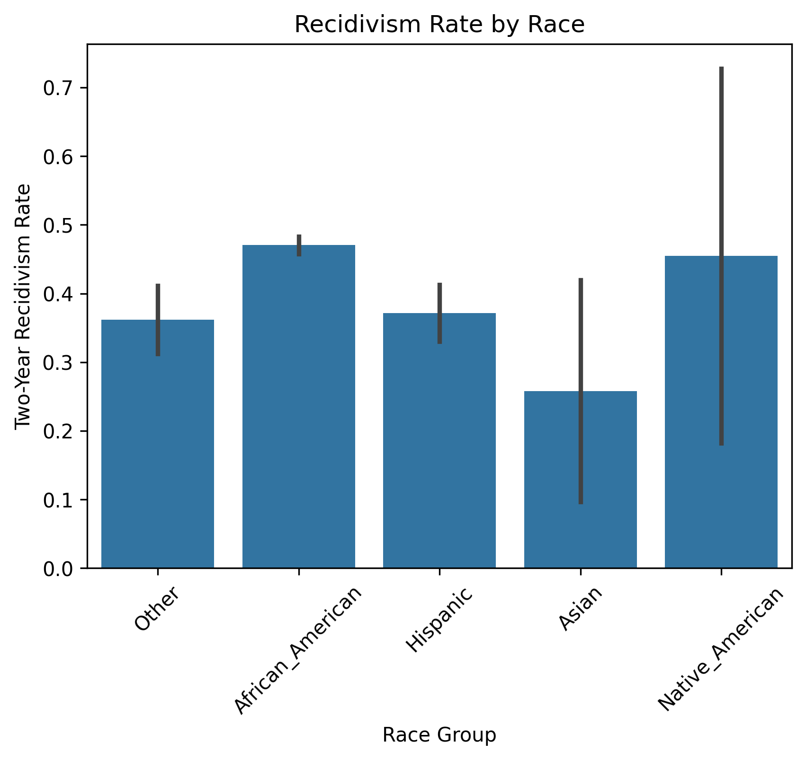
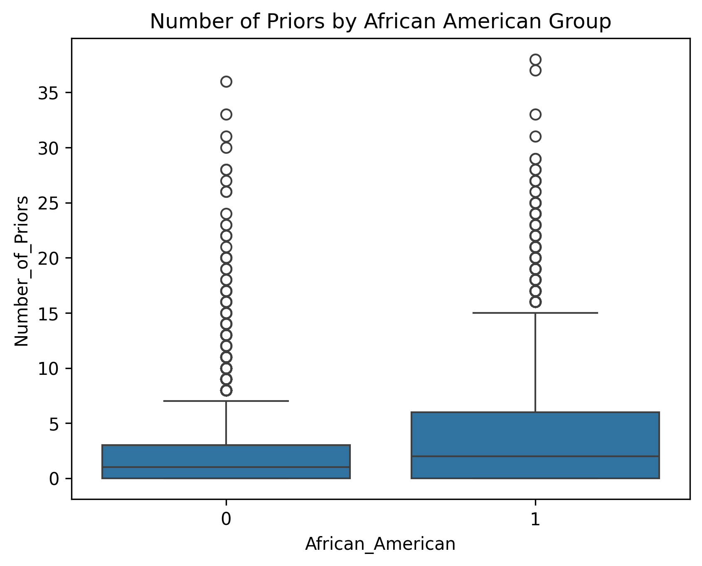
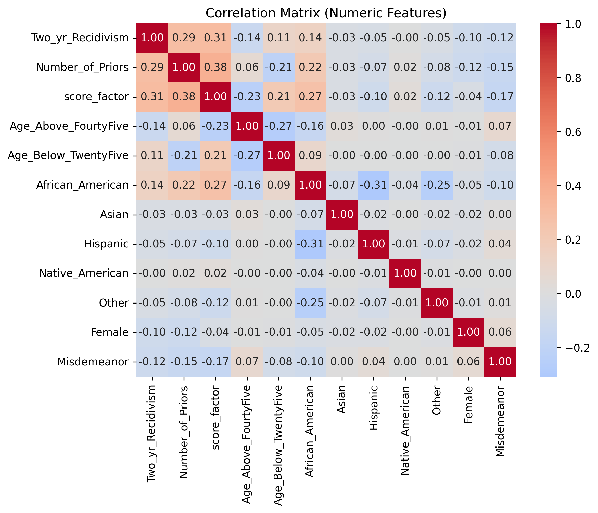
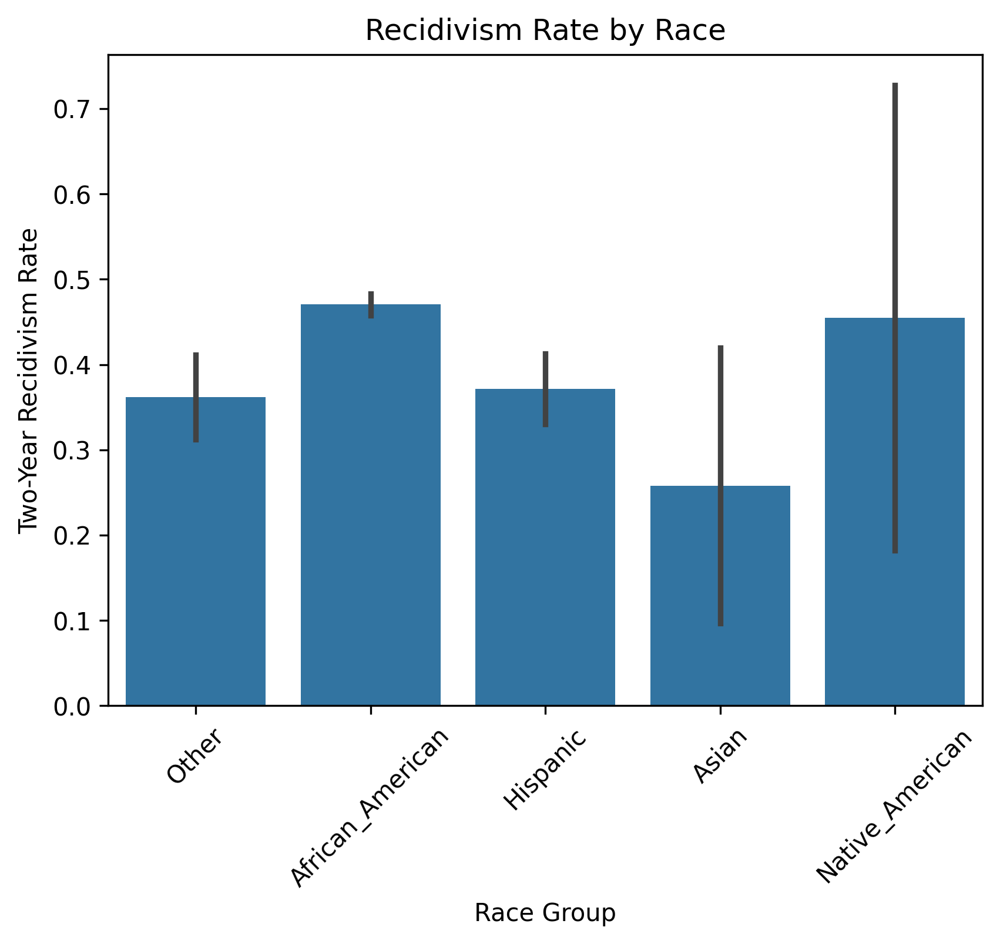
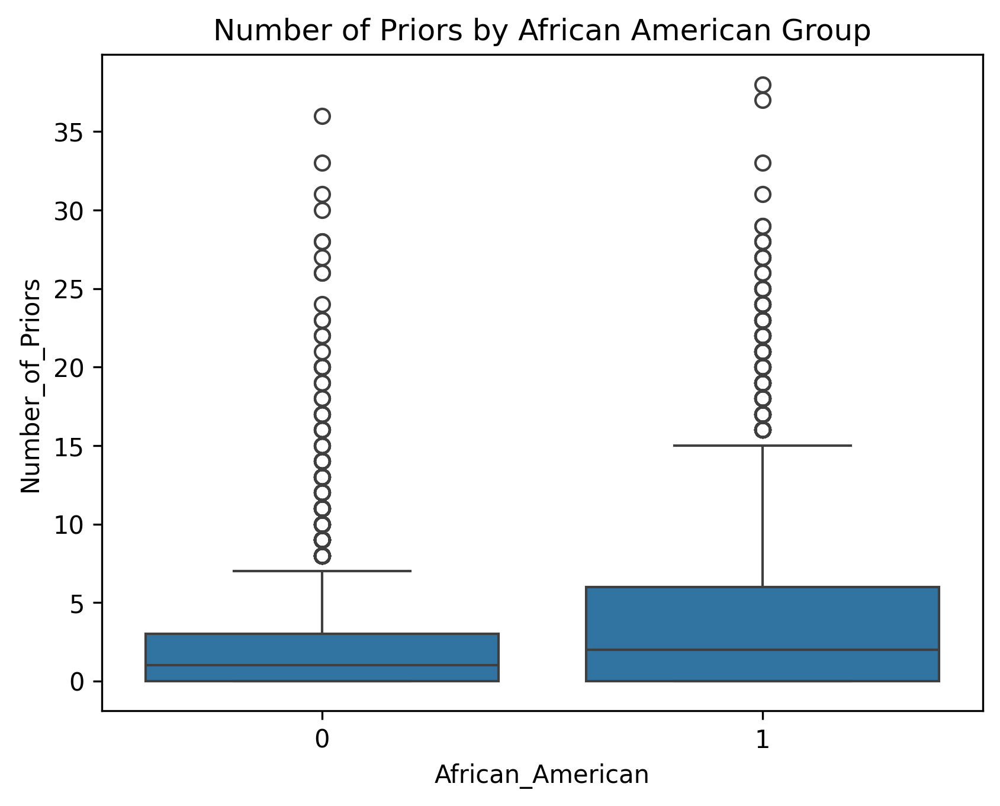
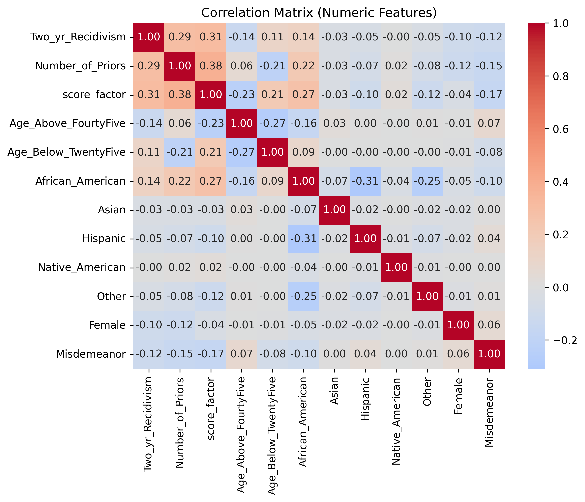

Evaluación de Sesgo
Se evaluó el rendimiento del modelo en función de género, edad y raza, observándose variaciones en precisión y recall, lo cual indica posibles sesgos en los datos y en las predicciones.

Este informe presenta las métricas, resultados y visualizaciones obtenidas a partir del modelo de predicción de recidivismo.
Accuracy: 0.6825
Accuracy: 0.6776
Se evaluó el rendimiento del modelo en función de género, edad y raza, observándose variaciones en precisión y recall, lo cual indica posibles sesgos en los datos y en las predicciones.


 




